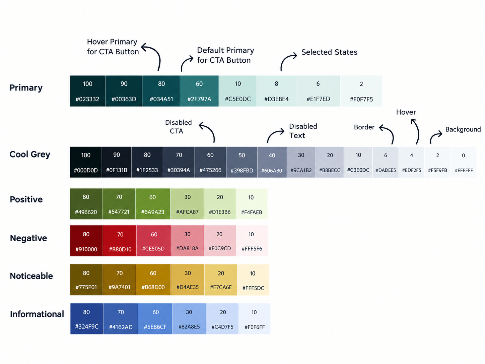
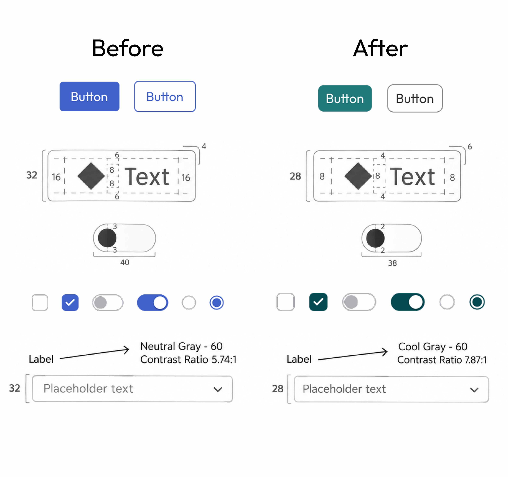
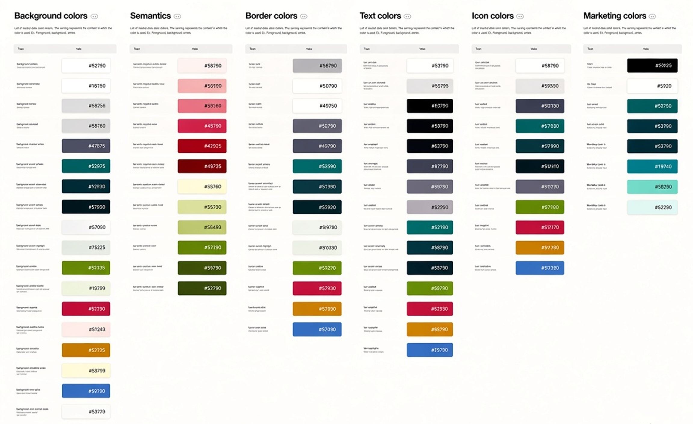
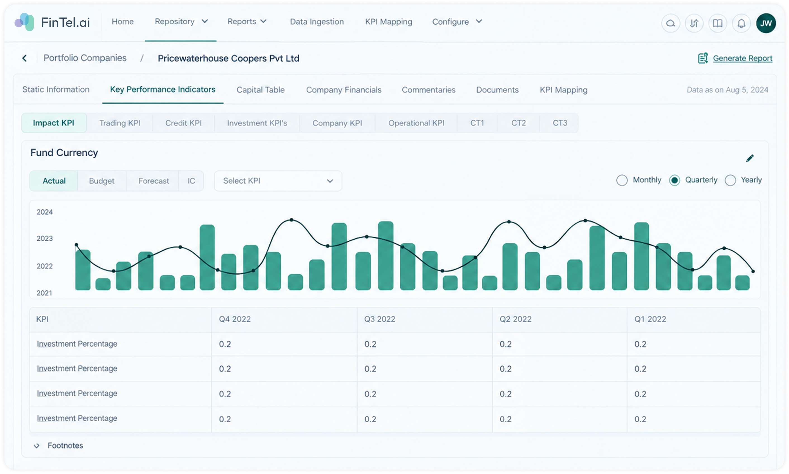
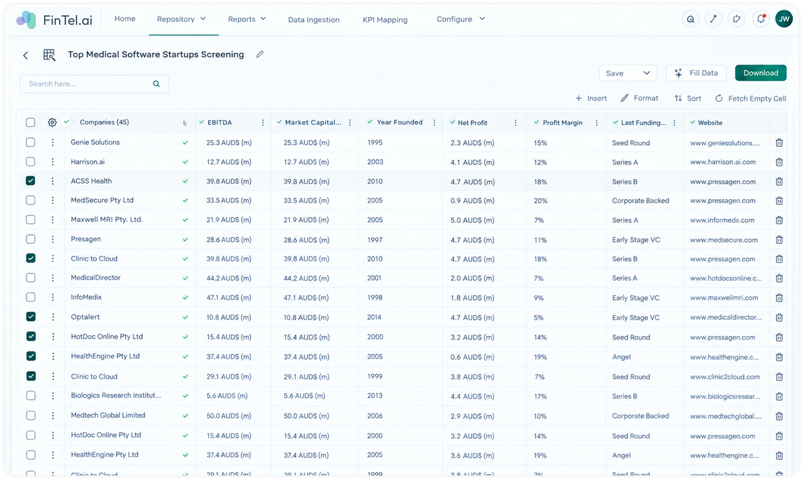

Revamping a product Design Language System in 3 weeks — translating a company rebrand into a quieter, denser, accessible and scalable interface language for data-heavy products.
System revamp completed as an urgent product priority.
Reduced dependence on the previous blue-heavy visual language.
Refined sizing and spacing for information-dense workflows.
Components, variants, tokens and implementation guidance connected.
A company-wide rebrand turned the DLS into an urgent product priority. But simply changing the palette would have carried the old system's visual and structural problems into the new brand.
The redesign was guided by a simple idea: when the product is full of information, the design system should create clarity through hierarchy rather than visual volume.
Use brand colour where it communicates action, focus or meaning — not as default decoration.
Reduce unnecessary dimensions while preserving readability, usability and accessible interaction states.
Turn repeated decisions into components, variants, tokens and predictable states.
Make the system understandable to design, business and development teams without a live explanation.
Established design systems were used as references for system architecture, tokens, component thinking and accessibility — then adapted to the product's own density and brand requirements.
Reference for scalable component thinking, foundations, states and system-level consistency.
Benchmark referenceReference for colour, spacing, component behaviour, states and accessibility principles.
Benchmark referenceCompared patterns across mature systems to understand what should become a rule instead of a one-off decision.
Pattern studyBrand color didn't meet 4.5:1 contrast ratio. We drilled further to find a right shade to depict our brand and pass all tests.
Reducing contrast of accent color also meant stabalising and balancing all our colors in a way it looks like parts of the same puzzle.

For data-heavy products, every unnecessary pixel has an opportunity cost. The revamp reconsidered component height, padding and spacing as a system rather than isolated measurements.
Instead of reducing dimensions indiscriminately, I looked at where space actually helped users group and scan information.
A more compact structure without turning the interface into a cramped or visually noisy experience.

Tokens are the language of the color system. What you call a color and in what context, defines the usability and helps developers better to implement in the code.

A design system is only useful if its rules survive contact with complex screens. The updated language was applied to representative product areas to test density, hierarchy and consistency together.
Following images are a mock up for portfolio demo purposes and do not represent actual product or contain any confidential data.


The handoff was structured so the new language could travel beyond the Figma canvas and into implementation.
View-only access to components, elements, variants, states and instances for reference and adoption.
Shared structured token values prepared for implementation and system-level consistency in .json file for our global css.
Component wise instructions for rapid changes and implementation to understand before & after so the change is seamless.
A business-facing presentation explaining what changed, where and the impact of the new language.
The rebrand gave the project a deadline. The DLS revamp gave the product a more scalable foundation for everything that came after.
Completed as an urgent rebrand priority.
Less blue and fewer unnecessary accent surfaces.
More compact sizing for data-heavy workflows.
Figma + tokens + developer and business handoff.
This revamp reinforced a systems-first approach: simplify the visual language, encode decisions into reusable structures, validate accessibility at the foundation, and make the handoff clear enough that the system can keep moving without the original designer in every room.